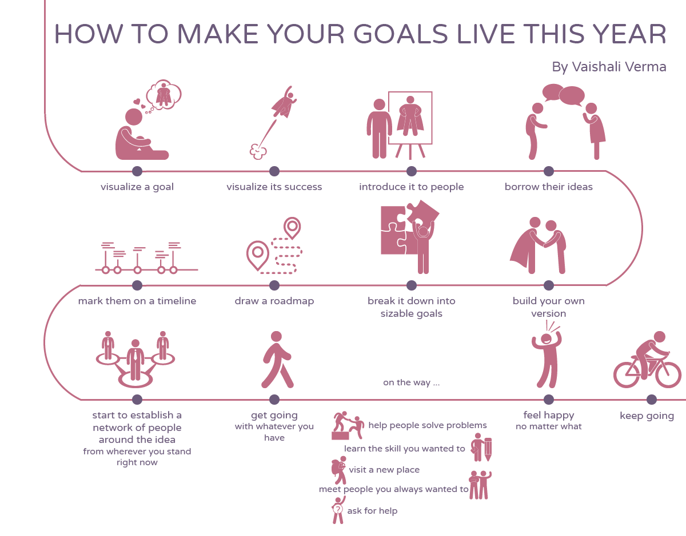

I was given a reading time of up to 1.5 minutes to make a visual for and the theme was about signing off the present year and getting into the new one.
I started with the intention of making a graphic about how to bring the new year with goals related to health, wealth and EQ only to realize that making goals is one thing and keeping up to them is the other.
So here is a small timeline of my view of what can be done to keep up with our goals every year. Made in 2018, holds true even still.
